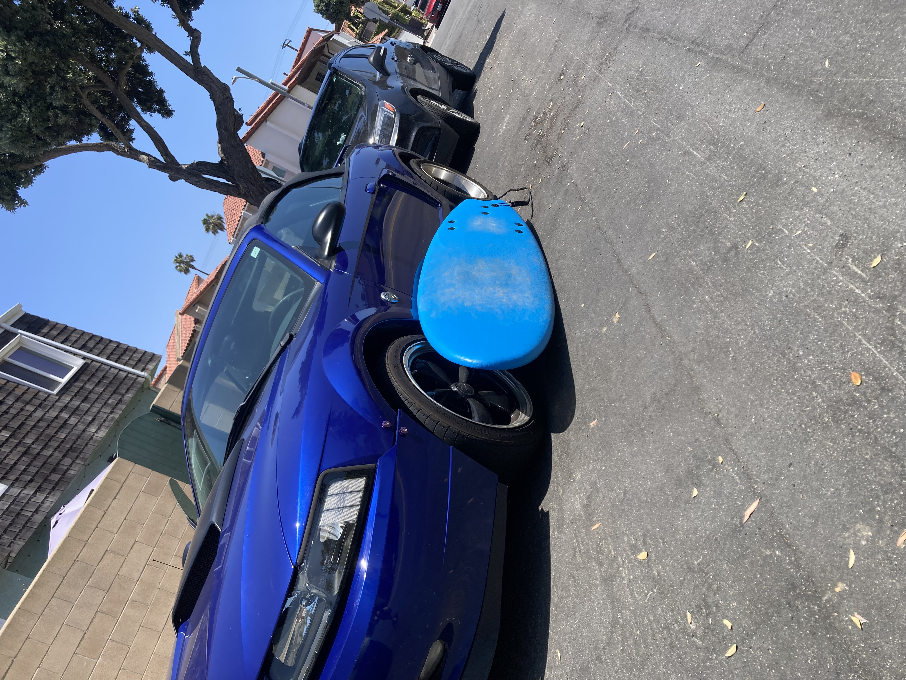
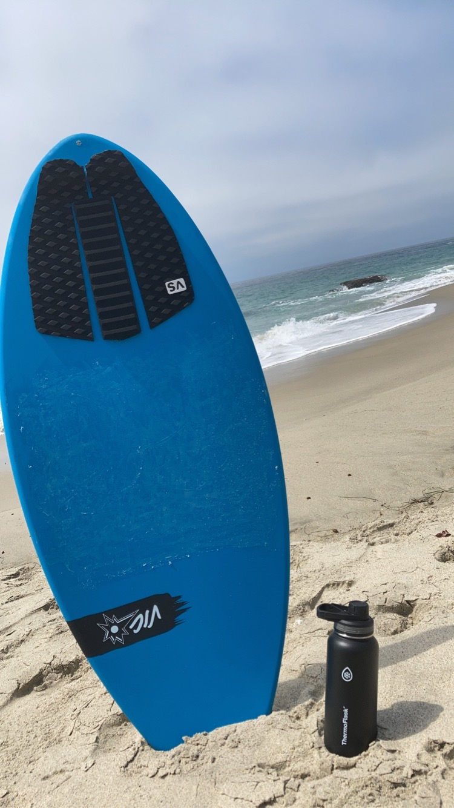
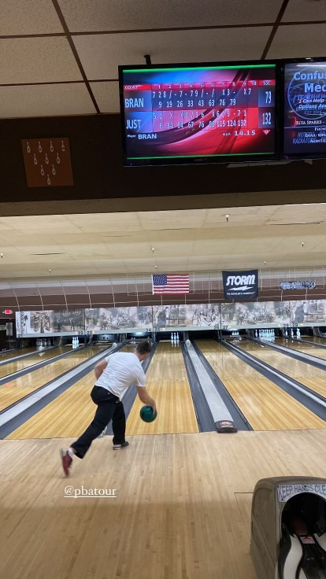

My Journey
I grew up in the vibrant community of Orange County, where I began my college adventure at Fullerton College. It was a journey filled with challenges and triumphs, leading me to discover my academic passion at Cal State Long Beach. When I'm not buried in textbooks,you'll find me soaking up the sun while riding waves or fine-tuning my golf game for that perfect swing.



My professional journey began in marketing at Cal State Long Beach, yet I soon discovered that my true passion lay elsewhere. Transitioning to Information Systems, I delved into the intricate world of data. From mastering the fundamentals of database management to honing my skills in Python, SQL, HTML, and more, I found myself captivated by the limitless possibilities within this field. As I immersed myself in various projects, my passion for data only intensified. Now, I eagerly seek an internship opportunity to further refine and expand my skills.